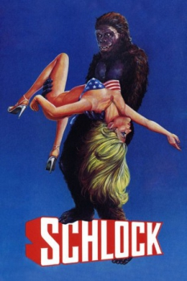

Country:United States, 80 minutes
Spoken languages:
Genres:Comedy, Horror, Sci-Fi
Director(s):John Landis
Writer(s):John Landis
Video Codec:Unknown
Number: 1173


Certification:PG
Storyline:
A quiet suburb in Southern California is terrorized by a mysterious murderous monster living in a cave. As the bodies pile up -- with incriminating banana peels always near by the crime scene -- a group of teens stumble on the guilty party: a 20-million-year-old Schlockthropus, an ape-like creature with a sense of the absurd.
Cast:

Medium: Bluray,
Loaned: No
Aspect ratio: Unknown